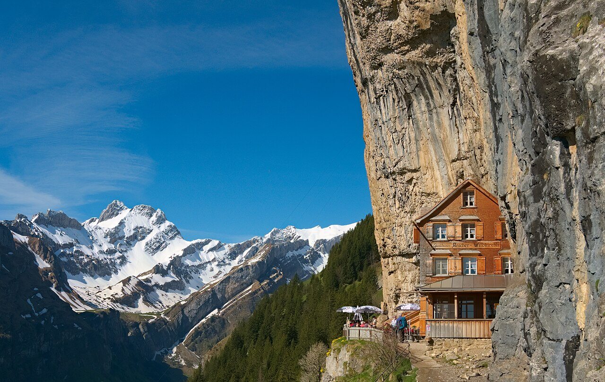
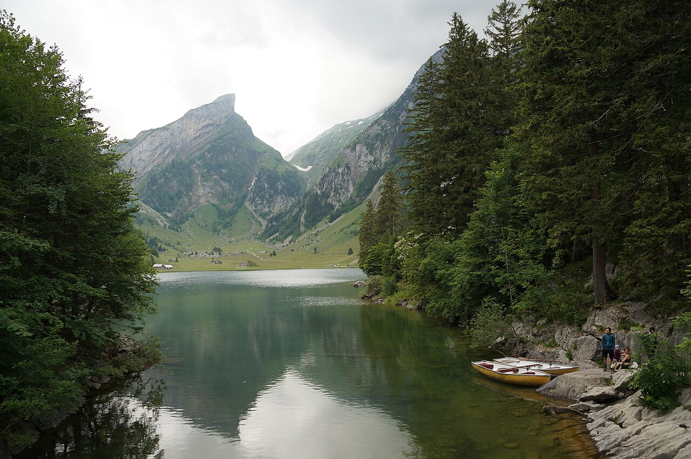
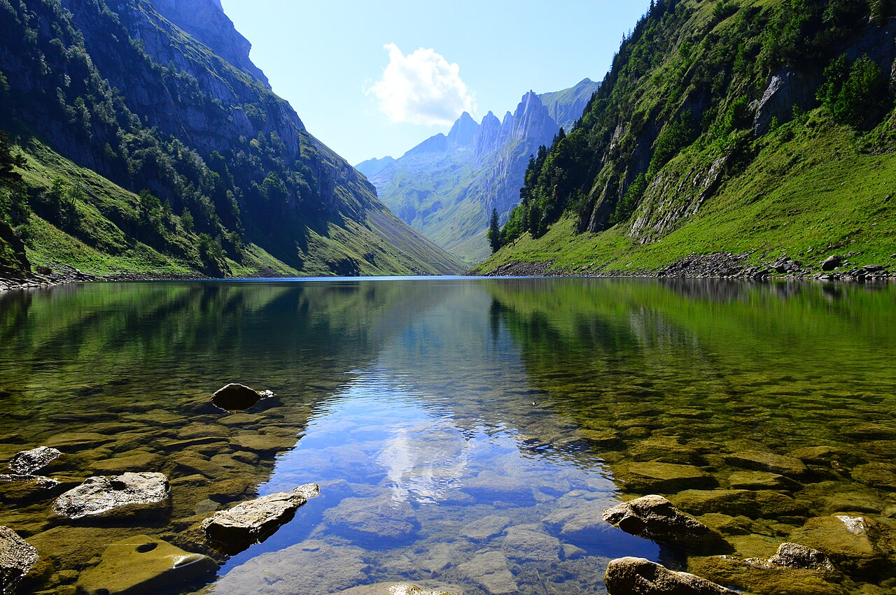
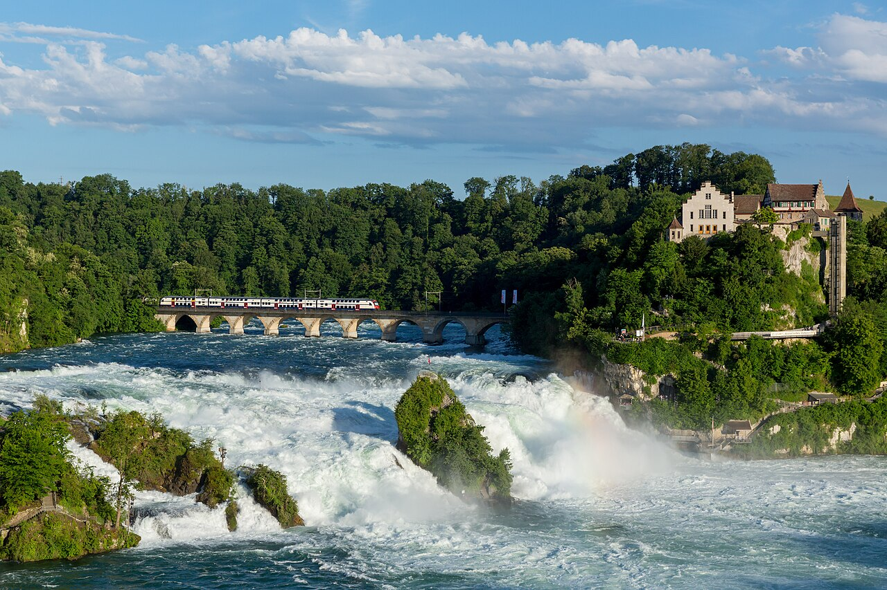
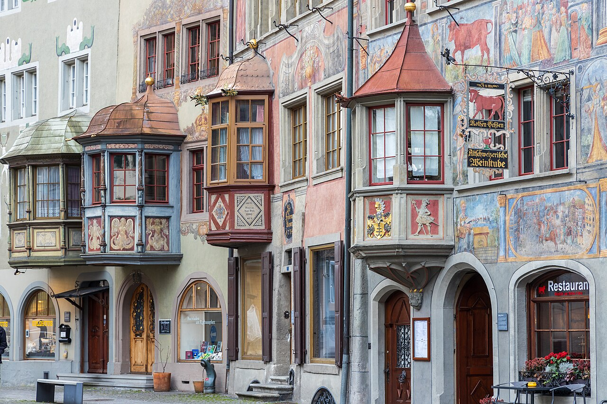
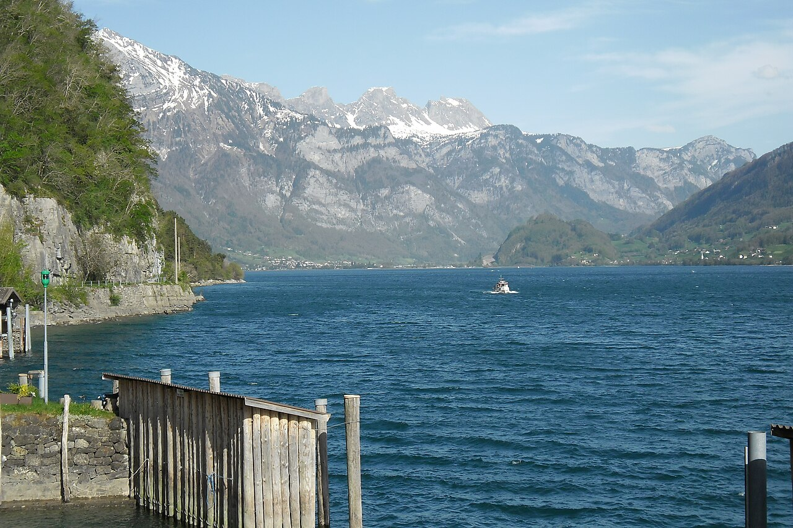

May
GoodGreen and cheap, but the Alpstein trails stay snowy until June.
per person≈ €1 090–1 790

The cliff-side Aescher guesthouse, mirror lakes in the Alpstein, Europe's mightiest waterfall and a village you can only reach by boat. Cheap, close and still a secret.
Lower mountains (max ~2,000 m) open early. The new Säntis cable car opens in spring 2027. July is just as good and barely pricier.
July–August adds ≈ €60–90 per person here (+5 %), mostly for beds. Passes, food and most lift tickets cost the same all summer.
Green and cheap, but the Alpstein trails stay snowy until June.
Meadows in flower and huts opening. The sweet spot.
Alpstein lakes and mountain inns at their best, and prices barely change.
Still lovely, but Ebenalp and Seealpsee are busy on sunny weekends.
Keep 1–2 days flexible and save the big mountain days for clear weather.
Langenfeld → Köln → Singen/Zürich → Schaffhausen (≈ 5 h). Rhine Falls at evening light, with a boat to the rock in the middle.
Painted houses of Stein am Rhein, then St. Gallen's UNESCO Abbey Library and on to Appenzell.
Cable car to Ebenalp → Wildkirchli caves → Aescher cliff guesthouse → steep path down to Seealpsee → Wasserauen (≈ 3 h).
Brülisau → Sämtisersee → Fälensee (a fjord-like mirror lake) → Bollenwees → back (≈ 5 h). Fit hikers start from Hoher Kasten along the Stauberen ridge.
Painted façades, the Appenzeller show dairy in Stein, and the Barfussweg barefoot trail Gontenbad → Appenzell (≈ 1.5 h).
Train to Walenstadt/Murg, boat to car-free Quinten (vineyards and fig trees under the Churfirsten cliffs).
Seerenbach Falls, one of the highest waterfalls in Switzerland, or a trip to the turquoise Klöntalersee near Glarus.
Zürich → Köln (≈ 5 h).





With 5 people, a holiday apartment with a kitchen is almost always cheapest. Book with free cancellation now and re-check prices later.
Apartments for 5 in Appenzell are good value. Add a mountain-guesthouse dorm night.
≈ CHF 40–60 pp/nightTraditional Appenzell hotels with wooden rooms and big breakfasts.
≈ CHF 75–100 pp/nightSimple mountain guesthouse rooms/dorms: sunset over the Alpstein after the day-trippers leave.
≈ CHF 80–120 pp with dinnerLangenfeld → Köln → Basel or Stuttgart/Singen → Schaffhausen (≈ 5 h). Home from Zürich. Driving is also easy here (≈ 6 h), and Appenzell parking is cheap.
No pass needed. Buy individual tickets with Supersaver fares in the SBB app. The Half Fare Card (CHF 150) does not pay off on this short route. Lifts: Ebenalp CHF 36 return, Hoher Kasten extra.
CHF per person for the whole trip in May–June, sharing everything between 5. 'Budget' = hostels/campsites and cooking. 'Comfort' = apartments/3★ hotels and more meals out.
| Item | Budget | Comfort |
|---|---|---|
| Train Langenfeld ⇄ eastern Switzerland | 90 | 130 |
| Swiss tickets (no pass) | 150 | 200 |
| Lifts & entries | 100 | 150 |
| Accommodation (7 nights) | 350 | 595 |
| Food | 280 | 520 |
| Buffer | 50 | 80 |
| Total (CHF) | 1 020 | 1 675 |
€ at 1 CHF ≈ €1.07. 2026 prices; Swiss fares rise ≈ 3–4 % from Dec 2026. Splurges are listed separately.
Today is late October 2026. See the overview page for the full timeline.